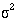
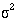
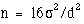
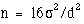

In terms of selecting a statistical test, the most important question
is "what is the main study hypothesis?" In some cases there is no
hypothesis; the investigator just wants to "see what is there". For
example, in a prevalence study there is no hypothesis to test, and the
size of the study is determined by how accurately the investigator
wants to determine the prevalence. If there is no hypothesis, then
there is no statistical test. It is important to decide a priori which
hypotheses are confirmatory (that is, are testing some presupposed
relationship), and which are exploratory (are suggested by the data).
No single study can support a whole series of hypotheses.
A sensible plan is to limit severely the number of confirmatory hypotheses. Although it is valid to use statistical tests on hypotheses suggested by the data, the P values should be used only as guidelines, and the results treated as very tentative until confirmed by subsequent studies. A useful guide is to use a Bonferroni correction, which states simply that if one is testing n independent hypotheses, one should use a significance level of 0.05/n. Thus if there were two independent hypotheses a result would be declared significant only if P<0.025. Note that, since tests are rarely independent, this is a very conservative procedure - one unlikely to reject the null hypothesis.
The investigator should then ask "are the data independent?" This can be difficult to decide but as a rule of thumb results on the same individual, or from matched individuals, are not independent. Thus results from a crossover trial, or from a case control study in which the controls were matched to the cases by age, sex and social class, are not independent. It is generally true that the analysis should reflect the design, and so a matched design should be followed by a matched analysis. Results measured over time require special care. One of the most common mistakes in statistical analysis is to treat dependent variables as independent. For example, suppose we were looking at treatment of leg ulcers, in which some people had an ulcer on each leg. We might have 20 subjects with 30 ulcers but the number of independent pieces of information is 20 because the state of an ulcer on one leg may influence the state of the ulcer on the other leg and an analysis that considered ulcers as independent observations would be incorrect. For a correct analysis of mixed paired and unpaired data consult a statistician.
The next question is "what types of data are being measured?" The test used should be determined by the data. The choice of test for matched or paired data is described in and for independent data in .
| 1. Choice of statistical test from paired or matched observations | |
| Variable | Test |
| Nominal | MeNemar's Test |
| Ordinal (Ordered categories) | Wilcoxon |
| Quantitative (Discrete or Non-Normal) | Wilcoxon |
| Quantitative (Normal*) | Paired T-test |
| * It is the difference between the paired observations that should be plausibly Normal. | |
It is helpful to decide the input variables and the outcome
variables. For example in a clinical trial the input variable is type
of treatment - a nominal variable - and the outcome may be some
clinical measure perhaps Normally distributed. The required test is
then the T-test. However, if the input
variable is continuous, say a clinical score, and the outcome is
nominal, say cured or not cured, logistic regression is the required
analysis. A t test in this case may help but
would not give us what we require, namely the probability of a cure for
a given value of the clinical score. As another example, suppose we
have a cross sectional study in which we ask a random sample of people
whether they think their general practitioner is doing a good job, on a
five point scale, and we wish to ascertain whether women have a higher
opinion of general practitioners than men have. The input variable is
gender, which is nominal. The outcome variable is the five point
ordinal scale. Each person's opinion is independent of the others, so
we have independent data. From here we know we should use a  test for trend, or a Mann-Whitney U test (with correction for ties).
Note, however, if some people share a general practitioner and others
do not, then the data are not independent and a more sophisticated
analysis is called for.
test for trend, or a Mann-Whitney U test (with correction for ties).
Note, however, if some people share a general practitioner and others
do not, then the data are not independent and a more sophisticated
analysis is called for.
Note that these tables should be considered as guides only, and each case should be considered on its merits.
 or
Fisher's
or
Fisher's
 trend
or Mann-Whitney
trend
or Mann-Whitney

 -trend or Mann- Whitney
-trend or Mann- Whitney( a) If data are censored.
(b) The Kruskal-Wallis test is used for comparing ordinal or non-Normal variables for more than two groups, and is a generalisation of the Mann-Whitney U test. The technique is beyond the scope of this book, but is described in more advanced books and is available in common software (Epi-Info, Minitab, SPSS).
(c) Analysis of variance is a general technique, and one version (one way analysis of variance) is used to compare Normally distributed variables for more than two groups, and is the parametric equivalent of the Kruskal-Wallis test.
(d) If the outcome variable is the dependent variable, then provided the residuals (see ) are plausibly Normal, then the distribution of the independent variable is not important.
(e) There are a number of more advanced techniques, such as Poisson regression, for dealing with these situations. However, they require certain assumptions and it is often easier to either dichotomise the outcome variable or treat it as continuous.
References
- Campbell MJ, Machin D. In: Medical Statistics: A Common-sense Approach , 2nd edn. Chichester: Wiley, 1993:2.
- Pocock SJ. Clinical trials: A Practical Approach . Chichester: Wiley, 1982.
- Senn SJ. The Design and Analysis of Cross-Over Trials . Chichester: Wiley, 1992.
- Gardner MJ, Altman DG (eds) In: Statistics with Confidence . BMJ Publishing Group, 1989:103-5.
- Gardner MJ, Machin D, Campbell MJ. The use of checklists in assessing the statistical content of medical studies. BMJ 1986; 292 :810-12.
- Macbin D, Campbell MJ, Payers P, Pinol A. Statistical Tables for the Design of Clinical Studies . Oxford: Blackwell Scientific Publications, 1996.
- Matthews JNS, Altman DG, Campbell MJ, Royston JP. Analysis of senal measurements in medical research. BMJ 1990; 300 :230-5.
- Altman DG. Practical Statistics for Medical Research . London: Chapman & Hall, 1991.
- Armitage P, Berry G. In: Statistical Methods in Medical Research . Oxford: Blackwell Scientific Publications, 1994.
State the type of study described in each of the following:
13.1 To investigate the relationship between egg consumption and heart disease, a group of patients admitted to hospital with myocardial infarction were questioned about their egg consumption. A group of age and sex matched patients admitted to a fracture clinic were also questioned about their egg consumption using an identical protocol.
13.2 To investigate the relationship between certain solvents and cancer, all employees at a factory were questioned about their exposure to an industrial solvent, and the amount and length of exposure measured. These subjects were regularly monitored, and after 10 years a copy of the death certificate for all those who had died was obtained.
13.3 A survey was conducted of all nurses employed at a particular hospital. Among other questions, the questionnaire asked about the grade of the nurse and whether she was satisfied with her career prospects.
13.4 To evaluate a new back school, patients with lower back pain were randomly allocated to either the new school or to conventional occupational therapy. After 3 months they were questioned about their back pain, and observed lifting a weight by independent monitors.
13.5 A new triage system has been set up at the local Accident and Emergency Unit. To evaluate it the waiting times of patients were measured for 6 months and compared with the waiting times at a comparable nearby hospital.
In many ways the design of a study is more important than the analysis. A badly designed study can never be retrieved, whereas a poorly analysed one can usually be reanalysed. Consideration of design is also important because the design of a study will govern how the data are to be analysed.
Most medical studies consider an input, which may be a medical intervention or exposure to a potentially toxic compound, and an output, which is some measure of health that the intervention is supposed to affect. The simplest way to categorise studies is with reference to the time sequence in which the input and output are studied.
The most powefful studies are prospective studies, and the paradigm for these is the randomised controlled trial. In this subjects with a disease are randomised to one of two (or more) treatments, one of which may be a control treatment. Methods of randomisation have been described in. The importance of randomisation is that we Imow in the long run treatment groups will be balanced in known and unknown prognostic factors. It is important that the treatments are concurrent - that the active and control treatments occur in the same period of time.
A parallel group design is one in which treatment and control are allocated to different individuals. To allow for the therapeutic effect of simply being given treatment, the control may consist of a placebo , an inert substance that is physically identical to the active compound. If possible a study should be double blinded - neither the investigator nor the subject being aware of what treatment the subject is undergoing. Sometimes it is impossible to blind the subjects, for example when the treatment is some form of health education, but often it is possible to ensure that the people evaluating the outcome are unaware of the treatment. An example of a parallel group trial is given in, in which different bran preparations have been tested on different individuals.
A matched design comes about when randomisation is between matched pairs, such as in, in which randomisation was between different parts of a patient's body.
A crossover study is one in which two or more treatments are applied sequentially to the same subject. The advantages are that each subject then acts as their own control and so fewer subjects may be required. The main disadvantage is that there may be a carry over effect in that the action of the second treatment is affected by the first treatment. An example of a crossover trial is given in, in which different dosages of bran are compared within the same individual. A number of excellent books are available on clinical trials.
One of the major threats to validity of a clinical trial is compliance. Patients are likely to drop out of trials if the treatment is unpleasant, and often fail to take medication as prescribed. It is usual to adopt a pragmatic approach and analyse by intention to treat , that is analyse the study by the treatment that the subject was assigned to, not the one they actually took. The alternative is to analyse per protocol or on study . Drop outs should of course be reported by treatment group. A checklist for writing reports on clinical trials is available.
A quasi experimental design is one in which treatment allocation is not random. An example of this is given in in which injuries are compared in two dropping zones. This is subject to potential biases in that the reason why a person is allocated to a particular dropping zone may be related to their risk of a sprained ankle.
A cohort study is one in which subjects, initially disease free, are followed up over a period of time. Some will be exposed to some risk factor, for example cigarette smoking. The outcome may be death and we may be interested in relating the risk factor to a particular cause of death. Clearly, these have to be large, long term studies and tend to be costly to carry out. If records have been kept routinely in the past then a historical cohort study may be carried out. Here, the cohort is all cases of appendicitis admitted over a given period and a sample of the records could be inspected retrospectively. A typical example would be to look at birth weight records and relate birth weight to disease in later life.
These studies differ in essence from retrospective studies, which start with diseased subjects and then examine possible exposure. Such case control studies are commonly undertaken as a preliminary investigation, because they are relatively quick and inexpensive. The comparison of the blood pressure in farmers and printers is an example of a case control study. It is retrospective because we argued from the blood pressure to the occupation and did not start out with subjects assigned to occupation. There are many confounding factors in case control studies. For example, does occupational stress cause high blood pressure, or do peop le prone to high blood pressure choose stressful occupations? A particular problem is recall bias, in that the cases, with the disease, are more motivated to recall apparently trivial episodes in the past than controls, who are disease free.
Cross sectional studies are common and include surveys, laboratory experiments and studies to examine the prevalence of a disease. Studies validating instruments and questionnaires are also cross sectional studies. The study of urinary concentration of lead in children and the study of the relationship between height and pulmonary anatomical dead space were also cross sectional studies.
One of the most common questions asked of a statistician about
design
is the number of patients to include. It is an important question,
because if a study is too small it will not be able to answer the
question posed, and would be a waste of time and money. It could also
be deemed unethical because patients may be put at risk with no
apparent benefit. However, studies should not be too large because
resources would be wasted if fewer patients would have sufficed. The
sample size depends on four critical quantities: the type I and type II
error rates and
 , the
variability of the data 
, and the effect size d. In a trial the effect size is the amount by
which we would expect the two treatments to differ, or is the
difference that would be clinically worthwhile.
, the
variability of the data 
, and the effect size d. In a trial the effect size is the amount by
which we would expect the two treatments to differ, or is the
difference that would be clinically worthwhile.
Usually  and
are fixed at 5% and 20% (or 10%) respectively. A simple formula for a
two group parallel trial with a continuous outcome is that the required
sample size per group is given by  for two sided
and
are fixed at 5% and 20% (or 10%) respectively. A simple formula for a
two group parallel trial with a continuous outcome is that the required
sample size per group is given by  for two sided  of 5% and
of 5% and  of 20%. For example, in a trial to reduce blood pressure, if a
clinically worthwhile effect for diastolic blood pressure is 5 mmHg and
the between subjects standard deviation is 10 mmHg, we would require n
= 16 x 100/25 = 64 patients per group in the study. The sample size
goes up as the square of the standard deviation of the data (the
variance) and goes down inversely as the square of the effect size.
Doubling the effect size reduces the sample size by four - it is much
easier to detect large effects! In practice, the sample size is often
fixed by other criteria, such as finance or resources, and the formula
is used to determine a realistic effect size. If this is too large,
then the study will have to be abandoned or increased in size. Machin et al. give advice on a sample size calculations
for a wide variety of study designs.
of 20%. For example, in a trial to reduce blood pressure, if a
clinically worthwhile effect for diastolic blood pressure is 5 mmHg and
the between subjects standard deviation is 10 mmHg, we would require n
= 16 x 100/25 = 64 patients per group in the study. The sample size
goes up as the square of the standard deviation of the data (the
variance) and goes down inversely as the square of the effect size.
Doubling the effect size reduces the sample size by four - it is much
easier to detect large effects! In practice, the sample size is often
fixed by other criteria, such as finance or resources, and the formula
is used to determine a realistic effect size. If this is too large,
then the study will have to be abandoned or increased in size. Machin et al. give advice on a sample size calculations
for a wide variety of study designs.